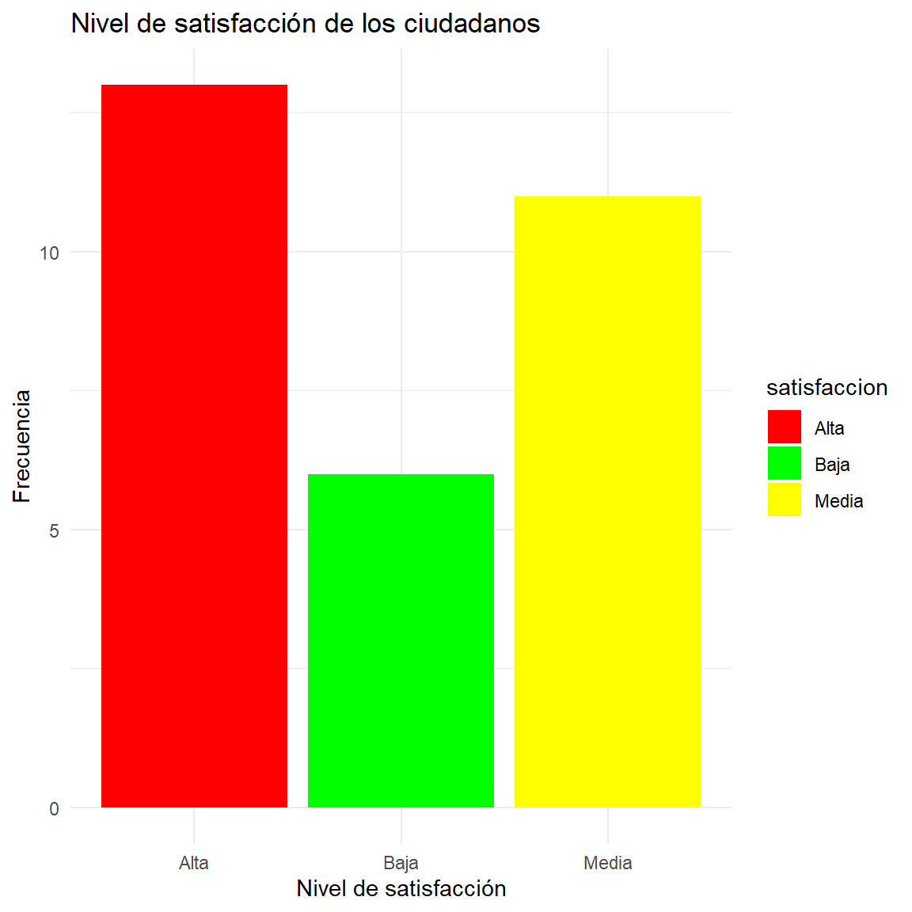
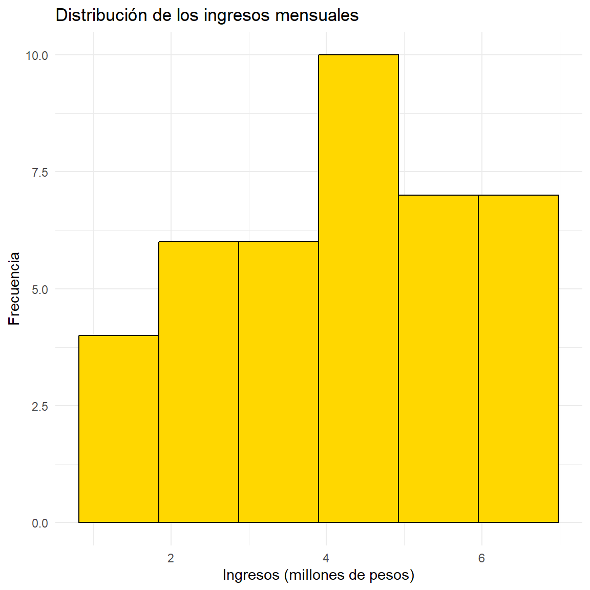

tramites
1 2 3 4
6 7 5 2 1 .Introducción
Una distribución de frecuencias constituye una de las herramientas fundamentales del análisis estadístico descriptivo. Su propósito es organizar y resumir un conjunto de datos mediante el conteo de las veces que aparece cada valor o categoría de una variable.
Cuando se analiza una sola variable, se construye una distribución de frecuencias unidimensional. Cuando se estudian simultáneamente dos variables, se utiliza una distribución de frecuencias bidimensional, también conocida como tabla de contingencia cuando las variables son categóricas.
Estas herramientas permiten transformar grandes cantidades de información en estructuras organizadas que facilitan la interpretación, comparación y representación gráfica de los datos.
2 .Distribución de frecuencias unidimensional
2.1 .concepto
Una distribución de frecuencias unidimensional organiza los valores observados de una única variable junto con el número de veces que aparece cada valor o categoría.
Sea:
X=\{x_1,x_2,\ldots,x_n\}
un conjunto de n observaciones de una variable estadística X.
La distribución de frecuencias permite determinar cuántas observaciones corresponden a cada valor o categoría de la variable.
Elementos de una distribución de frecuencias
Una tabla de frecuencias puede contener las siguientes columnas:
| Símbolo | Nombre | Interpretación |
|---|---|---|
| x_i | Valor o categoría | Valor observado de la variable |
| f_i | Frecuencia absoluta | Número de veces que aparece x_i |
| F_i | Frecuencia absoluta acumulada | Número de observaciones hasta x_i |
| h_i | Frecuencia relativa | Proporción de observaciones correspondiente a x_i |
| H_i | Frecuencia relativa acumulada | Proporción acumulada hasta x_i |
| % | Porcentaje | Frecuencia relativa expresada en porcentaje |
Frecuencia absoluta
La frecuencia absoluta de un valor x_i, representada por f_i, corresponde al número de veces que dicho valor aparece en el conjunto de datos.
Se cumple:
\sum_{i=1}^{k} f_i=n
donde:
- k = número de valores o categorías.
- f_i = frecuencia absoluta.
- n = tamaño de la muestra.
Ejemplo
Supongamos que se consulta a 20 ciudadanos sobre el número de trámites realizados durante el último año:
La función table() permite obtener las frecuencias absolutas.
Frecuencia absoluta acumulada
La frecuencia absoluta acumulada se representa mediante F_i y corresponde a la suma progresiva de las frecuencias absolutas.
Se calcula mediante:
F_i=\sum_{j=1}^{i}f_j
Por tanto:
F_1=f_1
F_2=f_1+f_2
F_3=f_1+f_2+f_3
y así sucesivamente.
La última frecuencia acumulada debe ser igual al tamaño de la muestra:
F_k=n
En R
1 2 3 4
6 13 18 20 La función cumsum() calcula sumas acumuladas.
Frecuencia relativa
La frecuencia relativa indica la proporción de observaciones que corresponde a cada valor o categoría.
Se representa mediante h_i y se calcula como:
h_i=\frac{f_i}{n}
La suma de todas las frecuencias relativas debe ser:
\sum_{i=1}^{k}h_i=1
En porcentaje
Para expresar la frecuencia relativa como porcentaje:
p_i=h_i\times100
Por ejemplo, si:
h_i=0.25
entonces:
p_i=0.25(100)=25\%
Frecuencia relativa acumulada
La frecuencia relativa acumulada se representa mediante H_i.
Se calcula mediante:
H_i=\sum_{j=1}^{i}h_j
También puede calcularse directamente como:
H_i=\frac{F_i}{n}
La última frecuencia relativa acumulada debe ser:
H_k=1
o equivalentemente:
H_k=100\%
Tabla de frecuencias completa
Una tabla de frecuencias para una variable cuantitativa discreta puede estructurarse así:
| x_i | f_i | F_i | h_i | H_i | % |
|---|---|---|---|---|---|
| x_1 | f_1 | F_1 | h_1 | H_1 | 100h_1 |
| x_2 | f_2 | F_2 | h_2 | H_2 | 100h_2 |
| \vdots | \vdots | \vdots | \vdots | \vdots | \vdots |
| x_k | f_k | n | 1 | 1 | 100 |
Construcción de una tabla de frecuencias en R
Una forma sencilla de construir una tabla completa es:
Valor fi Fi hi Hi Porcentaje
1 1 6 6 0.30 0.30 30
2 2 7 13 0.35 0.65 35
3 3 5 18 0.25 0.90 25
4 4 2 20 0.10 1.00 10Para redondear:
Valor fi Fi hi Hi Porcentaje
1 1 6 6 0.30 0.30 30
2 2 7 13 0.35 0.65 35
3 3 5 18 0.25 0.90 25
4 4 2 20 0.10 1.00 10Distribuciones de frecuencias para variables cualitativas
Cuando la variable es cualitativa, los valores representan categorías.
Ejemplo
Supongamos una encuesta realizada a 30 ciudadanos sobre el nivel de satisfacción con un servicio público:
satisfaccion
Alta Baja Media
13 6 11 La tabla puede complementarse con porcentajes:
satisfaccion
Alta Baja Media
0.4333333 0.2000000 0.3666667 Y expresarse en porcentaje:
satisfaccion
Alta Baja Media
43.33 20.00 36.67 2.2 .Representación gráfica de una distribución unidimensional
La elección del gráfico depende del tipo de variable.
| Tipo de variable | Gráfico recomendado |
|---|---|
| Cualitativa nominal | Barras |
| Cualitativa ordinal | Barras ordenadas |
| Cuantitativa discreta | Barras |
| Cuantitativa continua | Histograma |
| Cuantitativa | Polígono de frecuencias |
| Cuantitativa | Ojiva para frecuencias acumuladas |
Grádico de barras

Distribución de frecuencias para datos agrupados
Cuando una variable cuantitativa continua presenta muchos valores diferentes, puede ser conveniente agruparlos en intervalos de clase.
Ejemplo
[20,30),\quad [30,40),\quad [40,50),\quad [50,60)
Cada intervalo contiene un conjunto de valores.
Elementos de una distribución agrupada
Para cada intervalo pueden calcularse:
- Límite inferior.
- Límite superior.
- Marca de clase.
- Frecuencia absoluta.
- Frecuencia acumulada.
- Frecuencia relativa.
- Frecuencia relativa acumulada.
La marca de clase se calcula mediante:
x_i=\frac{L_i+U_i}{2}
donde:
- L_i = límite inferior.
- U_i = límite superior.
Número de intervalos
Una regla frecuente para determinar aproximadamente el número de clases es la regla de Sturges:
k=1+3.322\log_{10}(n)
donde n representa el tamaño de la muestra.
Otra expresión equivalente es:
k=1+\log_2(n)
Una vez determinado k, puede calcularse la amplitud aproximada:
A=\frac{R}{k}
donde:
R=X_{\max}-X_{\min}
es el rango.
Distribución de frecuencias para datos cuantitativos
Supongamos que se dispone de los ingresos mensuales de 40 usuarios, expresados en millones de pesos:
[1] 2.72 5.38 3.37 5.88 6.18 1.44 4.00 5.93 4.12 3.62 6.27 3.60 4.79 4.23 1.75
[16] 5.97 2.50 1.42 2.94 6.26 5.91 4.87 4.59 6.47 4.68 4.96 4.08 4.35 2.73 1.98
[31] 6.30 5.98 4.86 5.42 1.33 3.73 5.22 2.35 2.89 2.43Podemos construir intervalos mediante cut():
intervalos
[1,2) [2,3) [3,4) [4,5) [5,6) [6,7)
5 7 4 11 8 5 histograma
Para representar una variable cuantitativa continua:

3 .Distribución de frecuencias bidimensional
3.1 .concepto
Una distribución de frecuencias bidimensional estudia simultáneamente dos variables estadísticas.
Sean:
X \quad \text{y} \quad Y
dos variables observadas sobre los mismos individuos.
El objetivo consiste en analizar cómo se distribuyen conjuntamente los valores de ambas variables.
Por ejemplo:
- Edad y satisfacción.
- Nivel educativo y satisfacción.
- Estrato y acceso a un programa social.
- Modalidad de atención y satisfacción.
- Género y tipo de servicio utilizado.
tabla de contingencia
Cuando las dos variables son cualitativas o categóricas, la distribución bidimensional suele representarse mediante una tabla de contingencia.
Supongamos que se estudian:
- X: modalidad de atención.
- Y: nivel de satisfacción.
La tabla puede tener la siguiente estructura:
| Modalidad | Alta | Media | Baja | Total |
|---|---|---|---|---|
| Presencial | n_{11} | n_{12} | n_{13} | n_{1.} |
| Virtual | n_{21} | n_{22} | n_{23} | n_{2.} |
| Total | n_{.1} | n_{.2} | n_{.3} | n |
Los valores n_{ij} representan las frecuencias conjuntas.
frecuencia conjunta
La frecuencia conjunta n_{ij} corresponde al número de individuos que simultáneamente presentan:
X=x_i
y
Y=y_j
Por ejemplo:
n_{23}
representaría el número de individuos pertenecientes a la categoría 2 de X y a la categoría 3 de Y.
frecuencias marginales
Las frecuencias marginales se obtienen sumando las frecuencias de las filas o columnas.
frecuencia marginal de X
n_{i.}=\sum_j n_{ij}
frecuencia marginal de Y
n_{.j}=\sum_i n_{ij}
El total general es:
n=\sum_i\sum_j n_{ij}
frecuencias relativas bidimensionales
La frecuencia relativa conjunta se calcula como:
h_{ij}=\frac{n_{ij}}{n}
y cumple:
\sum_i\sum_jh_{ij}=1
En porcentaje:
p_{ij}=100h_{ij}
frecuencias condicionales
Las frecuencias condicionales permiten analizar la distribución de una variable dentro de una categoría específica de la otra variable.
Si queremos analizar Y condicionado a X=x_i:
h_{j|i}= \frac{n_{ij}}{n_{i.}}
Si queremos analizar X condicionado a Y=y_j:
h_{i|j}= \frac{n_{ij}}{n_{.j}}
Las frecuencias condicionales son fundamentales para estudiar posibles relaciones entre dos variables.
ejemplo de tabla bidimensional en R
Consideremos una encuesta realizada a 100 ciudadanos:
Modalidad Satisfaccion Frecuencia
1 Presencial Alta 30
2 Presencial Media 15
3 Presencial Baja 5
4 Virtual Alta 20
5 Virtual Media 20
6 Virtual Baja 10Para obtener una tabla de contingencia:
Satisfaccion
Modalidad Alta Baja Media
Presencial 30 5 15
Virtual 20 10 20El resultado conceptual es:
| Modalidad | Alta | Media | Baja |
|---|---|---|---|
| Presencial | 30 | 15 | 5 |
| Virtual | 20 | 20 | 10 |
interpretación de una tabla bidimensional
Supongamos que para los usuarios de modalidad presencial se obtiene:
| Modalidad | Alta | Media | Baja |
|---|---|---|---|
| Presencial | 30 | 15 | 5 |
El total de usuarios presenciales es:
30+15+5=50
Por tanto, la proporción de usuarios presenciales con satisfacción alta es:
\frac{30}{50}=0.60
o:
60\%
Una interpretación estadística sería:
El 60 % de los usuarios atendidos mediante la modalidad presencial presenta un nivel de satisfacción alto.
Es importante distinguir este resultado de un porcentaje calculado sobre el total general de la muestra.
4 .Conclusiones
Las distribuciones de frecuencias unidimensionales permiten organizar y resumir la información correspondiente a una sola variable mediante frecuencias absolutas, acumuladas, relativas y porcentuales.
Las distribuciones de frecuencias bidimensionales permiten analizar conjuntamente dos variables y constituyen una herramienta fundamental para estudiar patrones de asociación mediante frecuencias conjuntas, marginales y condicionales.
En R/RStudio, funciones como table(), prop.table(), cumsum(), xtabs() y ggplot2 permiten automatizar gran parte del proceso de construcción, análisis y visualización de las distribuciones de frecuencias.
El análisis estadístico debe ir más allá de la construcción mecánica de tablas: es fundamental interpretar los resultados dentro del contexto de investigación y seleccionar correctamente los porcentajes, gráficos y procedimientos estadísticos de acuerdo con el tipo de variables estudiadas.
5 .Resumen de fórmulas
Frecuencia absoluta
f_i
Frecuencia absoluta acumulada
F_i=\sum_{j=1}^{i}f_j
Frecuencia relativa
h_i=\frac{f_i}{n}
Frecuencia relativa acumulada
H_i=\sum_{j=1}^{i}h_j
Porcentaje
p_i=100h_i
Frecuencia conjunta
n_{ij}
Frecuencia marginal de X
n_{i.}=\sum_jn_{ij}
Frecuencia marginal de Y
n_{.j}=\sum_in_{ij}
Frecuencia relativa conjunta
h_{ij}=\frac{n_{ij}}{n}
Frecuencia condicional
h_{j|i}=\frac{n_{ij}}{n_{i.}}
Regla de Sturges
k=1+3.322\log_{10}(n)
Amplitud
A=\frac{R}{k}
Rango
R=X_{\max}-X_{\min}
Marca de clase
x_i=\frac{L_i+U_i}{2}